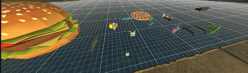
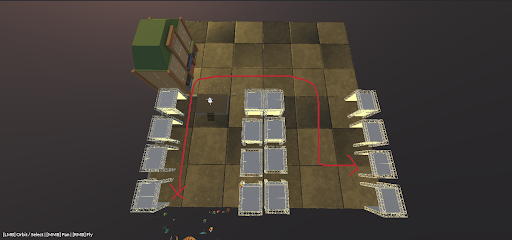
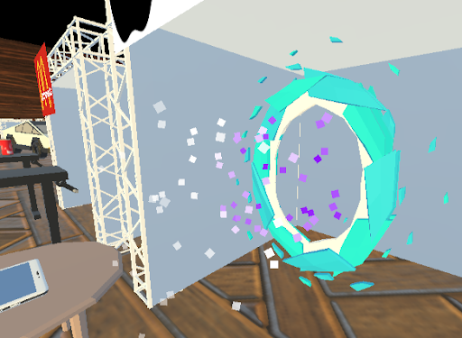
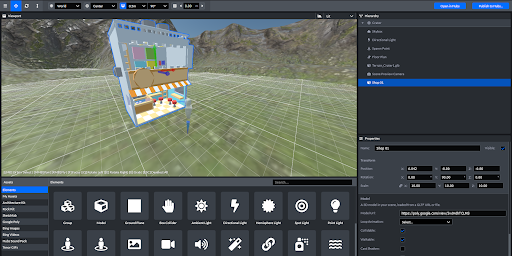
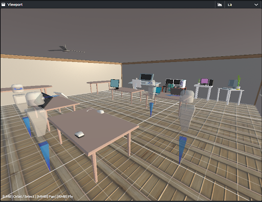

Aayush Shrestha

Designing a Virtual Online Marketspace for people to shop and experience
Team members:
This project aims to develop a virtual world where users are able to safely shop and epxrience with peers.
The goal is to integrate methodology and topics gathered from lectures, gaining hands-on
experience.
Our learning and execution process
Empathize
Brainstorm
We explored prominent online shopping methods, and found many issues concerning social interaction
Due to the corona pandemic, we had to lean towards providing a system that users need in their everyday lifestyle.
We landed on shopping online and found that all platforms that support virtual shopping do not incorporate the importance of socialization.
You are able to purchase things you want in Amazon or eBay, however it is missing the traditional charm of shopping with freinds and families.
Hence, thanks to brainstorming we thought of various ways that would make shopping online immersive, such as crowd effect, party system and etc.
We also decided to integrate our past projects, the sign language-to-audio to support the hearing impaired and mart-e to direct consumers to their goal destination.

Interpret
Ideate
We produced 5 prototypes, you can see the progress we have made from scratch. You can see the final outcome in the prototype section, where a video will be provided.
    Verify
StoryBoarding
We used storyboards to illustrate the the features and process of entering our virtual market. Moreover emphasising the charming factor of socialisation in shopping.
-
Script

Prototype
Contribuition
I was the main voice actor for the 5 minute film our group contructed, influencing the script/storyboard. I design and developed a virtual cinema for the virtual marketplace. Me and Zack designed and presented the slides to inform the audience of our system.
Reflection
For our reflection we all believe we integrated many methods and knowledge from the lectures such as social computing, extended reality ,human robot interaction and etc. Furthermore we acquired a further understand of the importance of VR and how it will eventually shape our world. In addition, I learned how to design in spoke and mozilla hub. I gained a deeper insight into online shopping and how it lacks the traditional feeling of shopping in real life. I now understand the importance of incorporating social matters when designing a system.
,-.
, ,-. ,-.
/ \ ( )-( )
\ | ,.>-( )-<
\|,' ( )-( )
Y ___`-' `-'
|/__/ `-'
|
|
| -hrr-
___|_____________